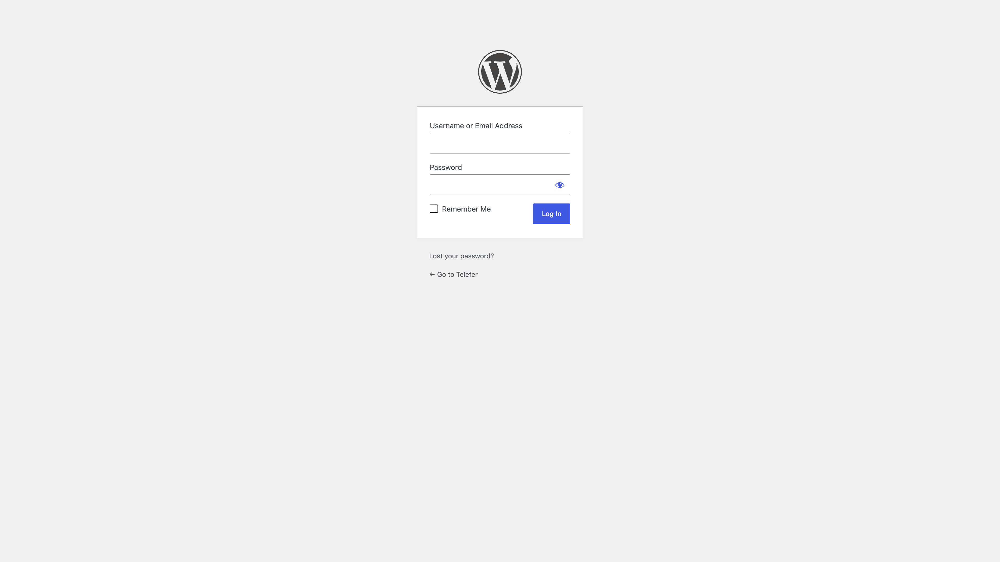
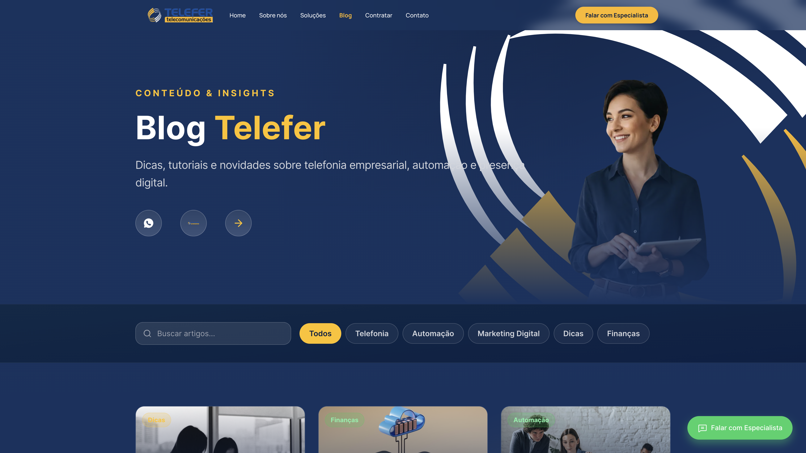

1. Modelo híbrido (como funciona hoje)
O site não foi apagado e remontado do zero no Elementor. Ele usa um modelo seguro:
Se a página foi salva com “Editar com Elementor” → o site mostra o conteúdo do Elementor.
Se a página ainda não foi montada no Elementor → o site mantém o layout PHP do tema Telefer (o visual atual).
Assim a Home, Sobre, Soluções etc. continuam no ar enquanto cada página é migrada no builder.
O plugin Elementor já está instalado em produção. O tema Telefer (versão 1.10+) reconhece páginas feitas no Elementor.
2. O que já é Elementor e o que ainda é PHP
| Área | Como edita hoje | Observação |
|---|---|---|
| Home, Sobre, Soluções, Telefer Cloud, Telefer com IA, Contato | Ainda no tema PHP, até alguém abrir e publicar no Elementor | Prontas para receber Elementor (fallback automático) |
| Página criada/remontada no Elementor | Editar com Elementor | Textos, imagens e seções ficam no builder |
| Blog (artigos) | WordPress → Posts | Não precisa do Elementor |
| Menu, logo, header, rodapé | Arquivos do tema (PHP/CSS) | Theme Builder do Elementor Pro ainda não está no fluxo |
| Presença Digital / LP Online | — | Removida. URL redireciona para /solucoes/ |
3. Entrar no painel
- Abra https://telefer.com.br/wp-admin/.
- Informe usuário ou e-mail e senha.
- Clique em Log In.

Quem ainda não tem usuário: peça ao admin do site (V4) para criar conta com perfil Editor ou Administrador.
4. Editar uma página com Elementor
Use este fluxo quando for migrar ou alterar uma página institucional no Elementor.
4.1 Abrir a página
- No menu esquerdo: Páginas → Todas as páginas.
- Abra a página desejada (ex.: Contato, Sobre nós, Home).
- Clique em Editar com Elementor.
4.2 Montar ou alterar seções
- No painel esquerdo do Elementor, arraste widgets: Título, Texto, Imagem, Botão, etc.
- Clique em qualquer texto/imagem já existente para editar.
- Use seções e colunas para organizar o layout (hero, cards, CTA).
- Cores da marca: azul #15325f / #004ca0 e amarelo #fdb813.
4.3 Publicar e conferir
- Clique em Publicar (ou Atualizar).
- Abra a URL pública da página.
- Faça hard refresh: Windows Ctrl+F5 · Mac Cmd+Shift+R.
- Se o cache mostrar versão antiga, acrescente ?telefer_nocache=1 na URL.
Importante: na primeira vez que você publicar uma página no Elementor, o layout PHP daquela página deixa de aparecer e passa a valer o que estiver no builder. Monte as seções principais antes de publicar, ou use Visualizar / rascunho enquanto constrói.
5. Usar o template Elementor Full Width
O tema tem um modelo específico para páginas 100% Elementor, mantendo o header/rodapé Telefer:
- Abra a página no editor do WordPress (não no Elementor ainda).
- No painel direito: Atributos da página → Modelo.
- Escolha Elementor Full Width.
- Salve / Atualize.
- Depois clique em Editar com Elementor.
As páginas institucionais atuais (Home, Sobre, Cloud…) já têm lógica híbrida nos templates próprios. O Full Width é útil para páginas novas.
6. Blog (continua no WordPress)
Artigos do Blog não dependem do Elementor:
- Posts → Adicionar novo.
- Preencha título, texto, resumo (Excerpt), categoria e imagem destacada.
- Categorias oficiais: Telefonia, Automação, Marketing Digital, Dicas, Finanças.
- Publicar.

7. Header, rodapé e menu
Hoje o menu (Home, Sobre, Soluções, Blog, Contratar, Contato), o logo e o rodapé vêm do tema Telefer, não do Elementor.
- Soluções ativas no menu: Telefer Cloud e Telefer com IA.
- Presença Digital foi retirada; quem acessar a URL antiga vai para /solucoes/.
Para editar header/rodapé visualmente no Elementor no futuro, seria necessário Elementor Pro (Theme Builder). Por enquanto, alterações de menu/header passam pelo tema.
8. Voltar ao layout antigo de uma página
Se uma página foi publicada no Elementor e você quiser restaurar o visual PHP do tema:
- Abra a página no WordPress.
- Em Elementor (ou nos metadados da página), limpe / desative o modo builder — ou exclua as seções e volte o conteúdo ao modo clássico, conforme a versão do Elementor.
- Forma prática: no editor Elementor, use o histórico / limpe o conteúdo e não deixe a página marcada como construída no Elementor; depois atualize.
- Confirme no site com ?telefer_nocache=1: se não houver builder ativo, o tema PHP volta a aparecer.
Em caso de dúvida, piece rollback do tema (seção abaixo) — o backup pré-Elementor está guardado.
9. Backup e rollback do tema
Antes da ponte Elementor, foi feito backup completo do tema:
- Servidor: wp-content/themes/telefer-pre-elementor-20261014/
- Arquivo: public_html/_backups/telefer-theme-pre-elementor-20261014-165906.tar.gz
Rollback de emergência (FTP):
- Renomeie themes/telefer → themes/telefer-elementor-wip
- Renomeie themes/telefer-pre-elementor-20261014 → themes/telefer
- Atualize o site com ?telefer_nocache=1
10. Checklist rápido
Alterar texto/imagem de página já no Elementor: Páginas → abrir → Editar com Elementor → alterar → Atualizar → hard refresh.
Migrar página que ainda está em PHP: Páginas → Editar com Elementor → montar seções → Visualizar → Publicar.
Artigo do Blog: Posts → Adicionar novo → categoria + imagem destacada → Publicar.
Conferir cache: acrescente ?telefer_nocache=1 na URL.
Soluções no menu: só Cloud e Telefer com IA.
Ordem sugerida para migrar páginas
- Contato (mais simples)
- Soluções (hub)
- Telefer Cloud
- Telefer com IA
- Sobre nós
- Home (mais complexa — deixe por último)